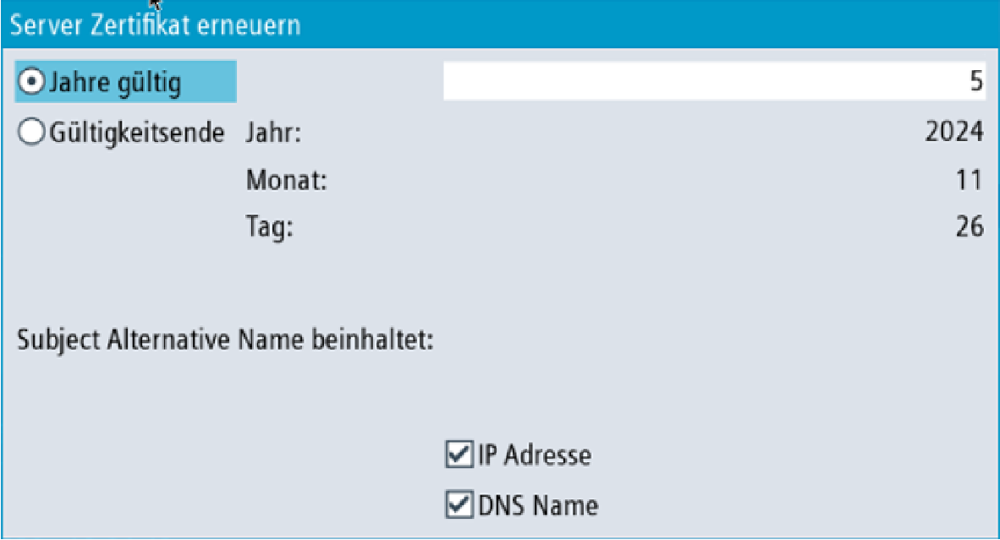

① | Im oberen Teil des Bilds wird der Name des OPC-UA-Server-Zertifikats angezeigt. |
② | Sie können die Server-Zertifikate erneuern. |
③ | Sie können das Server-Zertifikat auf ein konfiguriertes Gerät exportieren. |
④ | Sie können die OPC-UA-Dialoge verlassen. |
⑤ | Die Details des Server-Zertifikats werden im unteren Bereich des Bildschirms angezeigt. Sie können nach unten blättern, um weitere Zertifikatattribute anzuzeigen. |
Server-Zertifikat
Die Server-Zertifizierung kann jederzeit erneuert werden. Bei der Erneuerung kann vom Administrator Folgendes festgelegt werden:
Ablaufdatum des Zertifikats / Gültigkeit in Jahren
| Hinweis |
Stellen Sie vor Verwendung dieses Dialogs sicher, dass das Datum und die Uhrzeit in SINUMERIK Operate ordnungsgemäß eingestellt sind, da das Zertifikat zum Zeitpunkt der Erneuerung ab dem aktuellen Datum in SINUMERIK Operate gültig ist. |
Entscheidung, ob IP-Adresse und/oder DNS-Name im Server-Zertifikat genannt werden soll.
| Hinweis |
Viele Clients benötigen zur Validierung im Zertifikat die IP-Adresse. Wenn der Server über den DNS-Namen adressiert wird (z. B. weil sich die IP-Adresse des OPC UA Servers aufgrund einer dynamischen Zuweisung durch einen DHCP-Server häufig ändert), wird empfohlen, nur den DNS-Namen im Zertifikat anzugeben. Andernfalls muss das Zertifikat bei jeder Änderung der IP-Adresse erneuert und ausgetauscht werden. |
Um ein Server-Zertifikat zu erneuern, gehen Sie folgendermaßen vor:
Drücken Sie den Softkey "Erneuern".
Ein Popup-Fenster wird angezeigt, das zwei Methoden zur Auswahl eines Zeitraums bietet:
Wählen Sie die Anzahl von Jahren, die das Server-Zertifikat gültig sein wird.
Geben Sie ein präzises Ablaufdatum für das Zertifikat an.
Geben Sie auch an, ob die IP-Adresse und/oder der DNS-Name in das Server-Zertifikat geschrieben werden sollen.
Server-Zertifikat erneuern
Wenn Sie den Softkey "Abbruch" drücken, werden alle Eingaben verworfen und Sie gelangen zum Dialog "Server" zurück.
Wenn Sie den Softkey "OK" drücken, werden die Eingaben im System gespeichert, das aktuell gültige Zertifikat wird gelöscht und beim nächsten Start von SINUMERIK Operate wird das neue Zertifikat erstellt.
Um die Verbindung zum Server offline vorzubereiten, können Sie das Server-Zertifikat exportieren. Danach kann das Zertifikat importiert und auf der Client-Seite als vertrauenswürdig akzeptiert werden.
Drücken Sie den Softkey "Exportieren".
Ein Popup-Fenster mit dem SINUMERIK-Dateisystem für den Export wird angezeigt. Sie können zu einem Speicherort auf dem SINUMERIK-Dateisystem navigieren, um das OPC-UA-Server-Zertifikat zu exportieren.
Wenn Sie den Softkey "Abbruch" drücken, werden alle Eingaben verworfen und Sie gelangen zum Dialog "Server" zurück.
Wenn Sie den Softkey "OK" drücken, wird das Zertifikat exportiert.